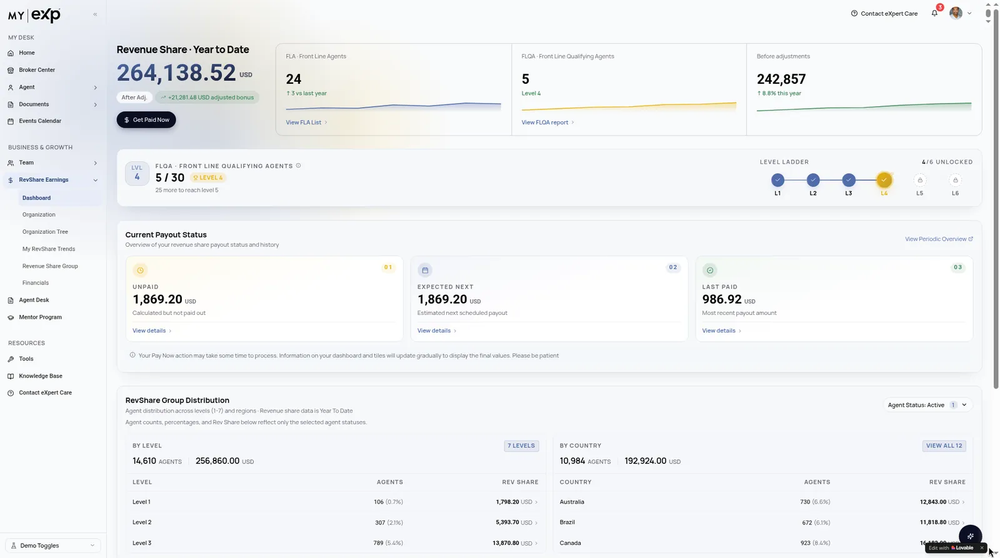
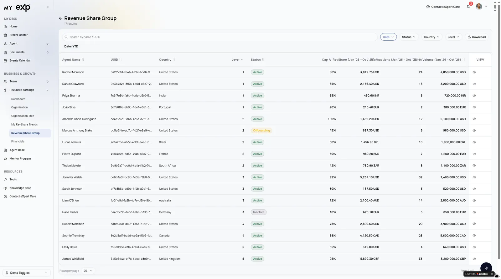
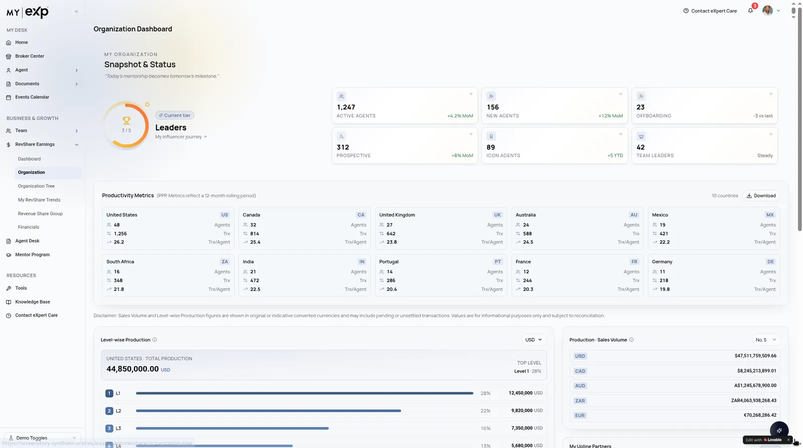
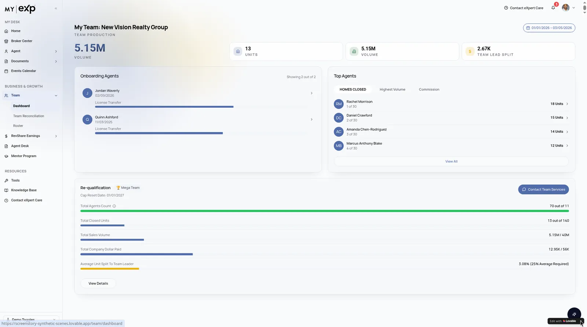
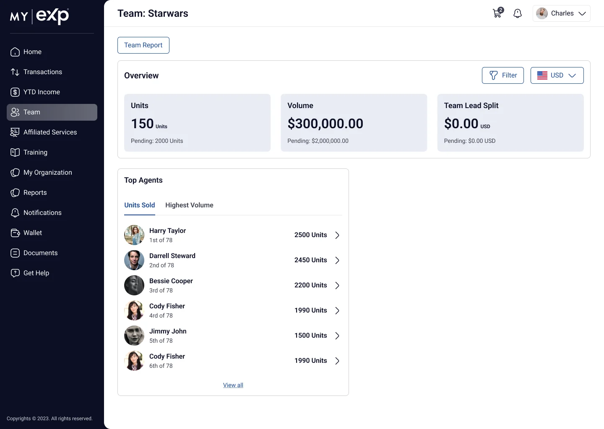

Project Overview
Product visionTo create a unified real estate platform that combines the My eXp agent experience with MIRA, an intelligent AI assistant that helps agents access information, complete tasks, navigate workflows and make better business decisions through natural conversations.
I designed the product end to end, from framing the problem and structuring the information architecture to the UI, the component patterns and MIRA’s conversational experience. I then built it into a clickable, stateful prototype of 71 screens and states, since updated with the current design for Home, Notifications, Team, RevShare Earnings and My Organization. I used Figma for wireframes, UI and components; ChatGPT and Claude to synthesize research inputs, explore flows and draft UX copy; and Lovable for the AI-assisted working prototype.
Project context: UX design work at eXp Realty on the My eXp agent portal, May 2025 – Jan 2026. I was the sole UX designer, working with four circle leads, each the product owner of their circle. I owned end-to-end UX/UI across all four circles: research, information architecture, flows, UI, design system, prototyping and handoff. MIRA and some other areas are shown as earlier prototype designs.
Product Background – My eXp and MIRA
My eXp is the main product ecosystem: the portal where an agent runs their business. MIRA is its intelligent AI layer, available across the whole ecosystem rather than living in one corner of it.
My Desk
Home, Broker Center, Agent, Documents, Events Calendar
Business & Growth
Team, RevShare Earnings, Agent Desk, Mentor Program
Resources
Tools, Knowledge Base, Contact eXpert Care
Global
Notifications, account menu, Demo Config
My eXp
One place where an agent can see goals and capping progress, understand revenue share, run transactions, grow through mentorship and find documents or help.
MIRA
A conversational assistant that answers questions about the agent’s business, surfaces insights and helps them get things done, with the same assistant powering support in Contact eXpert Care.
Business Context and Product Vision
An agent’s working day spans many questions: how close they are to their goals and their cap, what they have earned in revenue share and when they will be paid, which deal needs attention, who their mentor is, and where to find a document or get help.
When those answers live in separate tools and dense tables, agents spend effort finding information instead of acting on it. The opportunity: a single, personal and consistent platform, with an AI layer that turns questions into answers and actions.
Product goals
- Personal: a Home that reflects each agent’s own goals and progress
- Legible: make complex earnings and organization data easy to read
- Actionable: surface what needs attention next
- Consistent: one set of patterns across every area
- Conversational: let agents ask MIRA instead of hunting through menus
- Demo-ready: show many user states without separate accounts
Business goals
- One place for everything: reduce jumping between separate tools for goals, earnings, transactions and documents.
- Faster onboarding: help new agents get started faster with Getting Started, the post-90-days Home and training.
- AI-ready: lay the groundwork for MIRA to answer questions and handle tasks inside the portal.
- Stakeholders: the four circle leads (product owners). [Add: other stakeholder roles]
Problem Discovery
Who I designed for: a real estate agent who runs their business from the portal every day: tracking goals and capping, checking revenue share and payouts, moving transactions forward, working with a mentor and finding documents or help.
- Scattered answersGoals, cap, revenue share, deals, mentorship, documents and help sit in different places.
- Dense, hard-to-read dataEarnings and the revenue share organization are hierarchical and table-heavy.
- No clear next stepIt isn’t obvious which deal or task needs attention right now.
- Inconsistent patternsWhen every area behaves differently, the interface has to be relearned page by page.
How might we give an agent one personal, consistent platform that answers “where do I stand, and what should I do next?”, and let them get there by simply asking?
User Research and Agent Pain Points
The research framework centers on the agent’s daily jobs and the questions they need answered. ChatGPT and Claude supported synthesis, helping cluster research inputs into the pain-point themes below.
Research approach
| Research activity | Details |
|---|---|
| Stakeholder discussions | 4 product owners / circle leads |
| Product evaluation | Existing My eXp workflows and dashboards |
| Workflow analysis | Home, Agent, RevShare, Team, Agent Desk and Mentor Program |
| Competitive research | reZEN, SkySlope, KW Command, Compass and BoldTrail |
| AI exploration | Conversational workflows, contextual assistance and human approval |
| Synthesis | Pain-point clustering, journey mapping and opportunity identification |
Agent roles the design covers
- A new agent looking for a mentor
- An agent who has just capped
- A certified mentor managing mentees and requests
- A mentee following their mentor’s training
- An agent with a team and a revenue share organization
Agent pain points
| Pain point | Insight | Design opportunity |
|---|---|---|
| Scattered information | Agents need to navigate multiple sections to understand their business performance. | Unified personalized dashboard |
| Complex earnings | Revenue Share, FLA, FLQA and payout information can be difficult to interpret. | Simplified earnings dashboard |
| Unclear priorities | Agents need a clearer view of pending transactions and important tasks. | Needs your attention |
| Finding support | Agents need a faster way to locate documents and get relevant assistance. | MIRA conversational assistant |
| Mentorship discovery | New agents need guidance to identify mentors and understand the application process. | Guided Mentor Program |
Top 3 insights
Insight 01
Visibility over navigation
Agents need to understand their business health without visiting multiple dashboards.
Insight 02
Context over complexity
Financial and organizational information should explain what a number means, not simply display it.
Insight 03
Assistance over automation
Agents want help identifying the next step, but should retain control over important business and financial actions.
Insights synthesized from stakeholder discussions with the circle leads, product evaluation and workflow analysis.
Competitive Analysis
I reviewed products agents already use in three categories, looking at the same criteria for each: a unified view of the business, legibility of earnings and revenue share, onboarding, next-action guidance, AI grounded in the agent’s own data, and human control over important actions.
Products reviewed
Based on public product information (official product pages, help centers and press releases) reviewed in October 2026. Features change often and some are in beta, so this is a snapshot, not a hands-on audit.
| Product | Category | Notable features for agents | AI? |
|---|---|---|---|
| Real Brokerage – reZEN | Brokerage agent portal | Dashboard with production income and cap / Elite progress; Revenue Share Insights (month-over-month earnings, tier unlock progress, earnings per tier, pending and past payments, network contacts, badges); onboarding checklist; transactions, CDA on demand, document upload, mobile check deposit. | Not covered in the help articles reviewed |
| Keller Williams – Command | Brokerage agent platform | All-in-one platform for contacts / CRM, SmartPlans automation, Opportunities pipeline, marketing (Campaigns, Designs), agent websites and mobile app; open to third-party integrations via KW MarketPlace. | Yes – KWIQ chat, plus integrations such as RemyAI and Google Gemini |
| Compass – agent platform | Brokerage agent platform | End-to-end platform with CRM, marketing and client service; Compass One client dashboard; Collections; transaction timelines. | Yes – Compass AI: proactive, voice-activated assistant (announced June 2025) |
| BoldTrail (formerly kvCORE) | CRM / platform | CRM, IDX websites, marketing automation, lead generation, transaction management and recruiting on one system; Vitals performance dashboard; Streams mobile workspace with a prioritized daily workflow. | Yes – Smart Assistant, AI lead scoring, Streams AI Assistant |
| Follow Up Boss | CRM | CRM with built-in calling and texting; AI tools included at no extra cost and used where agents already work. | Yes – Smart Messages, suggested tasks, Smart Summary (closed beta, currently paused), AI lead tags |
| SkySlope | Transaction management | Dashboard with recent listing / transaction files, Forms and DigiSign shortcuts and one search across all of them; custom checklists with daily reminders for flagged items; Quick Audit; commissions synced through Books. | Described as “AI-enhanced”; AI coaching product (Ayce) |
| Lofty – AI Assistant / AOS | AI assistant | Chat available anywhere in the CRM: daily recommended actions, task and appointment creation, lead notes, natural-language property search, drafting emails and texts; Lofty AOS adds specialized AI agents (Sales, Social, Homeowner, Transaction Coordinator) and a Cowork workspace with a morning read and production metrics. | Yes – agentic; Cowork “escalates to you only when judgment is needed” |
| Follow Up Ace (in Follow Up Boss) | AI assistant | Reads the contact you have open, answers questions about contacts and pipeline, drafts follow-ups, recommends next moves, daily brief. | Yes – shows a preview and asks before it sends a message, creates or changes a task or note, or moves a pipeline stage |
| KWIQ (Keller Williams) | AI assistant | Chat on any page in Command, grounded in KW books, playbooks and help articles; drafting help; history tab; feedback on every answer. | Yes – knowledge-only: KW says it has no access to the agent’s own business data |
Takeaways by category
Brokerage agent portals
- reZEN puts cap progress and revenue share on the dashboard, with tiers, earnings per tier and payment history in one module. That sets a bar: revenue share should be readable and traceable down to the payment, not just a single total.
- Portals add onboarding checklists and AI as separate pieces. My eXp can make Getting Started and MIRA part of one Home, rather than extra places to visit.
CRM and transaction management
- The strongest patterns are “what’s due now” views: Streams’ prioritized daily workflow, SkySlope’s recent files, checklists and cross-app search. My eXp Home can borrow this “today” framing for transactions, cap and onboarding tasks.
- These tools are built around leads and deals, not the agent’s relationship with the brokerage (cap, revenue share, mentorship, support). That relationship is My eXp’s own space.
AI assistants for agents
- Assistants range from knowledge-only (KWIQ) to agentic (Lofty AOS). The most careful designs, Follow Up Ace and BoldTrail Streams, preview every action and need explicit confirmation. MIRA follows the same rule: draft, show, confirm.
- Grounding matters. KW is open that KWIQ cannot see the agent’s numbers, while FUB and Lofty use CRM data. MIRA should answer from the agent’s own earnings, cap and transactions, and show where each answer came from.
Gap My eXp + MIRA fills
No single product I reviewed combines all three: a brokerage portal where earnings and revenue share are easy to read, CRM-style next-action guidance, and an assistant grounded in the agent’s own brokerage data that confirms before acting. My eXp + MIRA aims to bring them into one Home. Agents can see their cap and revenue share, know what to do next, and ask MIRA to act, with a confirmation step before anything is changed or sent.
Sources
- Real – What is reZEN?
- Real – Revenue Share Insights in reZEN
- Real – Your reZEN Agent Profile
- Keller Williams – Command integrations press release
- KW Outfront – KW Command enhancements
- KW Answers – Use KWIQ in Command
- Compass – Next evolution of Compass AI (June 2025)
- BoldTrail – FAQ
- BoldTrail Helpdesk – Streams AI Assistant
- Follow Up Boss – AI features
- Follow Up Boss Help – Smart Summary
- Follow Up Ace – What is Follow Up Ace?
- SkySlope – Product overview
- SkySlope Support – New SkySlope Dashboard
- Lofty Help – AI Assistant
- Lofty – Lofty AOS launch (Feb 2026)
- Lofty – Cowork
Product Strategy and Feature Prioritization
Personal Home
Getting Started, capping progress and training first, in tiles each agent can rearrange.
Legible earnings
My Earnings, payout status by Unpaid / Expected / Last Paid, and organization reporting.
Actionable workspace
Agent Desk with “Needs your attention” and one workspace per deal.
Growth
Mentor Program journeys for every role and state.
MIRA layer
Ask, get insight and act from any screen.
One system
Shared tables, drawers, tabs and KPI cards.
Now · in the prototype
77 screens and states (32 in the current design): Sign-in & onboarding (2), Home & personalization (14), Notifications & account (8), MIRA & help (4), Broker Center (4), Agent (9), Documents (2), Team (4), Training (1), RevShare Earnings (13), Agent Desk (9), Mentor Program (7).
Next
Remaining routes (Events Calendar, Tools, Knowledge Base, Downloads), mobile layouts for frequent on-the-go tasks, and an accessibility review.
Later
Deeper MIRA capabilities grounded in the agent’s own data, and task execution with human confirmation.
Feature prioritization
| Priority | Feature | Reason |
|---|---|---|
| P0 – High | Personalized Home | Essential daily starting point |
| P0 – High | RevShare and Earnings | Critical financial visibility |
| P0 – High | Agent Desk | Transaction visibility and action tracking |
| P1 – Medium | MIRA assistant | Faster information discovery |
| P1 – Medium | Mentor Program | Agent growth and onboarding |
| P2 – Later | Advanced AI task execution | Requires deeper integrations and safeguards |
| P2 – Later | Mobile experience | Supports agents working on the move |
Prioritization rationale: I weighed each feature on impact (business value and agent need) against effort (implementation complexity), working alongside the four circle leads. Core workflows such as Home, RevShare and Agent Desk came before advanced AI automation and extended platform capabilities.
Information Architecture
The sidebar groups the platform into three areas. A persistent header holds notifications, the account menu (with Demo Config) and Contact eXpert Care; MIRA floats on every screen.
My Desk
- Home
- Customize Home Screen
- Getting Started checklist
- Broker Center
- State Mentors table
- Mentor profile drawer
- Agent
- Dashboard
- Agent Production Details
- ICON Program
- Custom Service Fees
- Documents
- Year-End
- Downloads
- Documents Portal
- Events Calendar
Business & Growth
- Team
- Dashboard
- Team Reconciliation
- Roster
- RevShare Earnings
- My Earnings · Revenue Share
- My FLA · Unpaid / Expected / Last Paid
- Revenue Share Group
- My Organization
- Overview Dashboard
- Off-boarding Overview
- Detail Report · downloads
- Agent Desk
- Transaction workspace (7 tabs)
- Mentor Program
- Apply · Mentor · Mentee views
Resources
- Tools
- Knowledge Base
- Contact eXpert Care
- Call · AI chat · Email
Global
- Notifications
- Activity Feed · Recognition
- Filters · Detail drawer
- Account menu
- Personal Details · Settings
- Demo Config
- MIRA assistant
Agent Journey Mapping
A journey through an agent’s working day, mapped to the touchpoints in the platform and the role MIRA is designed to play at each step.
| Stage | Agent goal | Touchpoints | MIRA’s role (design intent) | Pain points & feelings |
|---|---|---|---|---|
| Start the day | See where I stand | Home: Getting Started, Capping Year, Scheduled Training | Summarize progress and what changed | Uncertainty about performance, cap progress and upcoming priorities |
| Check earnings | Know what I earned and when I get paid | My Earnings, Unpaid / Expected / Last Paid, Revenue Share Group | Explain trends; start a payout with confirmation | Difficulty understanding payout status, revenue share levels and expected earnings |
| Move deals forward | Act on what needs attention | Agent Desk, Needs your attention, transaction workspace | Recommend the next action on a deal | Concern about missing deadlines, documents or transaction requirements |
| Grow | Find or be a mentor | Mentor Program, Choose Mentor drawer, mentor dashboard | Guide through the right mentorship journey | Uncertainty about mentor eligibility, selection and application progress |
| Get help | Find a document or an answer fast | Documents, Contact eXpert Care (call, AI chat, email) | Answer or route to the right human channel | Frustration when searching multiple resources for the correct answer |
| Celebrate | Mark milestones | CAP REACHED state, Recognition tab | Highlight milestones and peers to recognize | Limited visibility into milestones and opportunities to recognize peers |
The Demo Config lets the same prototype walk through three of these journeys live: a new agent looking for a mentor, an agent who just capped, and a certified mentor.
User Flows and Interaction Design
Key flows keep the agent in context: focused drawers instead of new pages, explicit steps for anything involving money, and scenario switching for demos.
Mentor Program flows for every role and state
Mentorship has many states, so I designed it as a set of journeys: a new agent sees a Find Your Mentor card with a countdown, compares mentor cards and profiles, or lets the system choose. Agents can apply to become mentors through a prefilled multi-step application, and certified mentors get a dashboard for mentees, pending requests (Accept / Decline) and their own public profile. Mentees see their mentor, training materials and progress.
Notifications with context
Notifications became a full page with an Activity Feed and a Recognition tab, quick date and type filters, and a detail drawer that explains the event in context (capping details, ICON status, top transaction). Recognition items include a send-a-gift action to encourage celebrating peers.
Scenario-driven Demo Config for stakeholder demos
To demo realistic journeys without fake accounts, I built a Demo Configuration panel into the account menu: mentor modes, capping scenarios (including CAP REACHED), ICON toggles, country and FLQA states. Switching a scenario updates the live UI, and a sidebar Demo Toggles menu covers the most common switches during a walkthrough.
Dashboard UX and UI Design
The dashboards turn dense business data into clear answers: where the agent stands, what they earned and what needs attention.
A personalized Home that answers “where do I stand?”
Home is a modular set of tiles that answers “where do I stand?” at a glance: a Getting Started checklist for new agents, Capping Year progress with GCI, Volume, Units and Revenue Share, Scheduled Training, Achievements, What’s New and Upline Partners. Home changes with the agent’s stage: the Getting Started checklist leads for new joiners and drops away after the first 90 days.
Customize Home Screen lets each agent drag tiles into the order they want, with Reset to Default, Cancel and Save Changes, and a short first-run overlay that explains how.
Capping progress as a moment, not a number
Capping is one of the most meaningful milestones for an agent, so I designed it as a recurring visual thread: the Capping Year progress bar on Home, a year-by-year capping history timeline on the Agent dashboard, and a CAP REACHED celebration state that turns goals green and adds goal-reached badges.
Making RevShare legible: earnings, levels and organization reporting
RevShare data is dense and hierarchical. I split it into clear jobs: My Earnings opens on Revenue Share with My FLA, My FLQA, My New Agents and My Prospective Agents cards, a Revenue Share Group donut with agent counts per level, and Unpaid, Expected Next and Last Paid amounts that each open an agent-level table. The Revenue Share Group report lists every agent with level, cap percentage and amount, and a side panel for details.
For the organization, Organization Reporting separates an Overview Dashboard (KPI tiles, YTD revenue share and volume, agent mix and per-level charts), an Off-boarding Overview and a Detail Report. Large reports are downloaded in the background and delivered to Notifications, with a clear state when a report is too large to display.
Agent Desk: one workspace per transaction
Agent Desk starts with the active pipeline and a Needs your attention list so the next action is obvious. Each transaction opens into a workspace with persistent key facts (agent, buyer, expected close, days on market, price) and tabs for Overview, Contacts, Commission, Checklist, Documents, Activity and Comments, so everything about a deal lives in one place.
A consistent table system
Much of the portal is tabular, so I standardized one data-table pattern: search and filter chips, a column manager, Save View, Download, per-column search, pagination, and row click to open a detail drawer. Once agents learn it on one page, it works the same on State Mentors, Production Details, Team Reconciliation, Revenue Share Group and My Mentees.
Before and After: Design Evolution
The earlier prototype next to the current design for the same screens. Captions describe only what is visibly different between the two.
Home

Before: a light sidebar and a mission-control layout of goal KPIs (Homes Closed, Commission, Sales Volume), Weekly Quests and a capping ring. After: dark navy navigation, a full-width announcement banner and modular tiles: Getting Started checklist, Capping Year progress with GCI, Volume, Units and Revenue Share, Scheduled Training, Achievements, What’s New and Upline Partners.
After: Home-Screens Figma file.
Home customization

Before: drag handles and remove controls on each card, with Done and Reset layout. After: a Customize Home Screen mode with dashed tile outlines and Reset to Default, Cancel and Save Changes in the page header.
After: Home-Screens Figma file.
RevShare dashboard → My Earnings

Before: YTD revenue share, Get Paid Now, FLA/FLQA tiles, a level ladder and payout status cards. After: Revenue Share and GCI tabs, My FLA, My FLQA, My New Agents and My Prospective Agents cards, a Revenue Share Group donut by level, and Unpaid, Expected Next and Last Paid amounts.
After: Cosmo Transition Figma file.
Revenue Share Group

Before: a group table with date, status, country and level filters. After: a Reports page with Rev Share Group and Rev Share from Team tabs and a simpler table of level, cap percentage and amount.
After: Cosmo Transition Figma file.
Organization dashboard → Organization Reporting

Before: an organization snapshot with leader tier, KPIs with month-over-month deltas and productivity by country. After: Overview Dashboard, Off-boarding Overview and Detail Report tabs, organization KPI tiles, YTD revenue share and volume, donut charts and per-level bar charts.
After: Organization Figma file.
Team dashboard


Before: team production, onboarding agents, Top Agents tabs and Mega Team re-qualification progress. After: Units, Volume and Team Lead Split tiles with pending values, a currency selector and Filter, and Top Agents tabs for Units Sold and Highest Volume.
After: Cosmo Transition Figma file.
MIRA – Agentic AI Experience Design
MIRA is designed to go beyond a traditional chatbot. Rather than a help widget that answers FAQs, it is an assistant that understands what the agent is trying to do, uses the context of their business, and helps them act, with the agent always in control.
In the prototype
- Floats on every screen, one click away from Home and every other area
- Opens with a greeting, suggested prompts (GCI trends, listing velocity, active pipeline) and chat history
- Answers with chart insight cards that can be pinned to the dashboard
- The same MIRA panel powers AI chat support in Contact eXpert Care, so help and insights share one entry point
MIRA’s answers in the prototype are scripted to demonstrate the experience.

Beyond a chatbot: capabilities and design principles
Labels: Prototyped shown in the prototype · Designed pattern designed interaction principle · Roadmap planned capability.
Natural-language conversations
Agents ask in their own words, starting from suggested prompts such as GCI trends, listing velocity and active pipeline.
Understanding agent intent
Requests are framed as intents (get an insight, find something, do a task, get help) so MIRA can respond in the right way.
Context-aware responses
Answers take into account where the agent is and what they are looking at, and come back as chart insight cards rather than walls of text.
Accessing relevant agent information
Answers draw on the agent’s own goals, earnings, pipeline and documents.
Assisting with business workflows
MIRA hands the agent into existing flows such as Get Paid Now, a transaction checklist or the mentor application instead of replacing them.
Recommending next actions
Like “Needs your attention” on Agent Desk, MIRA suggests what to do next and links to it.
Supporting task execution through AI agents
MIRA prepares and runs multi-step tasks on the agent’s behalf.
Human confirmation and control
Important actions follow the Get Paid Now model: show exactly what will happen, then Review, Confirm and Done. Nothing important happens without the agent’s approval.
Error handling and conversation recovery
When a request is unclear or fails, MIRA asks a clarifying question, offers options, or routes to a human in Contact eXpert Care.
Conversation flow
Conversational UX and AI Workflows
Conversation design principles
- Start with prompts, not a blank box: suggested prompts show what MIRA can do
- Show, don’t tell: answer with a short summary and a chart insight card
- Make answers useful later: pin an insight card to the dashboard
- Remember the thread: chat history keeps earlier questions close
- Clear, plain language: UX copy drafted and refined with ChatGPT and Claude, then edited for tone
- Always a way out: human help in Contact eXpert Care via call or email
AI workflows
- Insight Prototyped
Ask about GCI trends → chart insight card → pin to dashboard - Support Prototyped
Start AI Chat in Contact eXpert Care → the same MIRA panel answers - Navigate Designed pattern
Ask for a document → MIRA links to the right place in Documents - Act Designed pattern
Ask to get paid → MIRA opens Get Paid Now with the fee and total → agent confirms - Next step Roadmap
MIRA flags a deal that needs attention and prepares the next task for approval
Wireframing and Prototyping
Understand
Framed the agent’s daily questions and jobs, and synthesized research inputs into goals.
ChatGPT · ClaudeStructure (IA)
Grouped the platform into My Desk, Business & Growth, Resources, plus a global header and MIRA.
Wireframe
Sketched layouts and flows for Home, RevShare, Agent Desk, the Mentor Program and MIRA.
FigmaVisual UI & components
Designed KPI cards, data tables, drawers and tabs with a consistent type, color and spacing hierarchy.
FigmaPrototype
Built 71 screens and states as a stateful app, with a Demo Config to switch scenarios live.
LovableIterate
Tested drawers, drill-downs and multi-step flows as real behavior, and refined layout and UX copy.
Lovable · ChatGPT · ClaudeBuilding the prototype in Lovable with AI-assisted development meant interactions like drawers, drill-downs, multi-step flows and MIRA’s panel could be tested as real behavior instead of static frames. The result is a clickable prototype in which hotspots link the screens the way the app does.
- [Add: Figma wireframe and UI images to show the design evolution]
Full screen set and interactive walkthrough available on request or in interview.
Design System and Components
A small set of reusable components and states keeps 77 screens feeling like one product. Once an agent learns a pattern on one page, it works the same everywhere.
Core components
- KPI tiles for capping progress, GCI, Volume, Units and Revenue Share
- Data table with search and filter chips, column manager, Save View, Download, per-column search and pagination
- Detail drawers and side panels for agents, notifications, transactions and mentors, so context is never lost
- Tabs for the transaction workspace and Notifications (Activity Feed · Recognition)
- Step flows such as the mentor application and background report downloads
- MIRA panel with prompts, chat history and pinnable insight cards
Visual hierarchy
- Typography and spacing that put key values first, with labels and table data secondary
- Color used for meaning, such as goals turning green and goal-reached badges in the CAP REACHED state
- Status and payout cards that make earnings readable at a glance
- Persistent key facts at the top of each transaction workspace
States & microinteractions
- Empty, filtered and drill-down states, including “report too large to display”
- Celebration state for CAP REACHED
- Customize Home Screen with Reset to Default, Cancel and Save Changes
- Pending requests with Accept / Decline; row click opens a drawer
- Scenario switches that update the live UI
Consistency
One table pattern serves State Mentors, Production Details, Team Reconciliation, Revenue Share Group and My Mentees. A persistent header and the floating MIRA assistant appear on every screen, and drawers keep the agent on the page they started from.
Usability Testing and Iterations
Test plan: core tasks
- Find how close you are to your cap on Home
- Find what you will be paid next on My Earnings
- Find the deal that needs your attention in Agent Desk
- Ask MIRA about your GCI trend and pin the answer
- Find and choose a mentor
What to observe: task success, time on task, errors and points of confusion, and trust in MIRA’s answers.
Results and iterations
- Status: [Add: testing completed, or planned]
- Participants: [Add: number and profile of agents tested]
- Key findings: [Add: findings]
- Changes made: [Add: before / after iterations]
Development Handoff
What a handoff package includes
- Figma screens, components and their states
- The Lovable prototype as a reference for real interaction behavior
- Interaction notes for drawers, tabs, tables and multi-step flows
- MIRA conversation specs: intents, response formats, confirmation steps and error and recovery states
- Demo Config scenarios for QA and stakeholder review
- Accessibility notes for color, contrast and keyboard flows
How it happened
- Handed off to the four circle leads (product owners). The circle leads took the designs forward into development with their teams.
- [Add: tools and documentation used, e.g. Figma Dev Mode, tickets, specs]
Product Outcomes and Business Impact
MIRA is integrated as one assistant across the platform, and the same panel serves insights and support.
- [Add: stakeholder or recruiter feedback from demos]
- [Add: business impact or metrics, only if measured]
Learnings and Future Roadmap
Working across Figma and Lovable changed how I design. Figma gave me a clear structure and a shared set of components; building those designs in Lovable with AI assistance let me move from idea to a working, stateful experience quickly, and test interactions like drawers, drill-downs and multi-step flows as real behavior instead of static frames.
Designing MIRA taught me that an AI assistant is a product surface of its own: it needs intents, response formats, confirmation and recovery designed as carefully as any screen. ChatGPT and Claude were useful thinking partners for exploring flows and tightening UX copy, while the design decisions stayed mine.
The Demo Config turned out to be one of the most useful design tools in the project: one prototype can tell the story of a new agent looking for a mentor, an agent who just capped, and a certified mentor, live in the same session.
Future roadmap
- Usability testing with agents on Home, RevShare, Agent Desk and MIRA
- Complete the remaining routes (Events Calendar, Tools, Knowledge Base, Downloads)
- Mobile layouts for the most frequent on-the-go tasks
- Accessibility review of color, contrast and keyboard flows in charts and tables
- Deeper MIRA capabilities grounded in the agent’s own data
- MIRA task execution through AI agents, with human confirmation for important actions